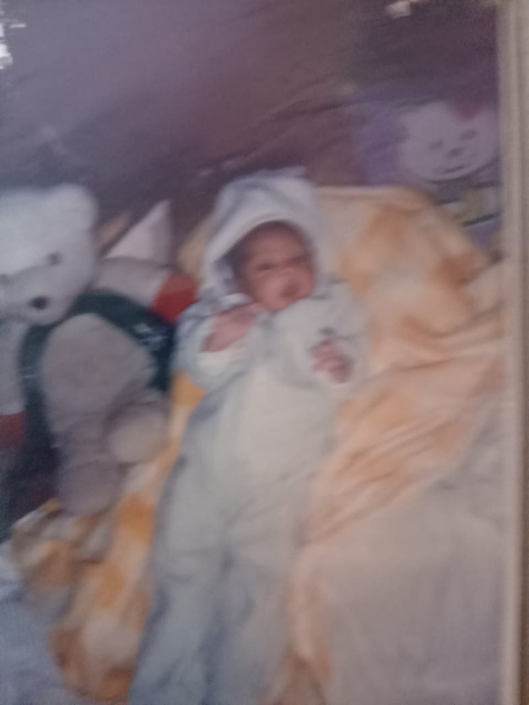
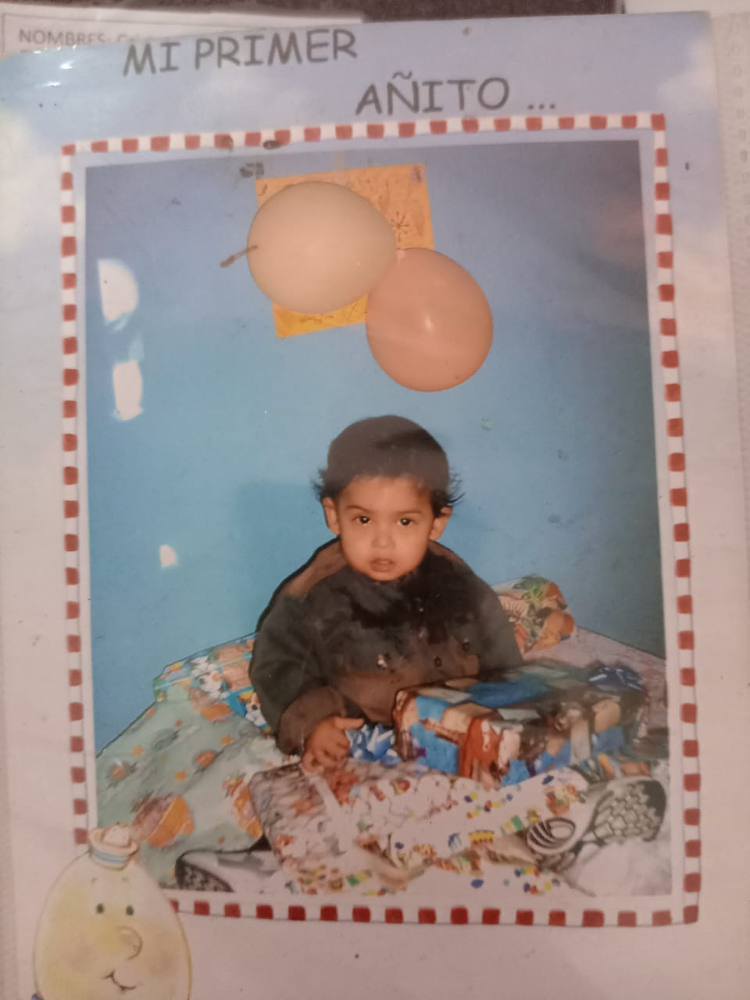

 Me llamo Cristopher Mauricio Ramirez Dieguez y nací el 30 de octubre de 2004 en Guatemala, dentro de una familia que siempre ha estado a mi lado, apoyándome en cada paso. Mis padres, Héctor Ramirez y Veronica Dieguez, quienes se dedican a la creación de prendas para la venta, me enseñaron valores fundamentales como la responsabilidad, la perseverancia y la importancia de siempre dar lo mejor de mí en cualquier cosa que haga. Desde pequeño, siempre he sido una persona curiosa, con una necesidad constante de entender el mundo que me rodea. Me encantaba desmontar juguetes para ver cómo funcionaban por dentro, aunque muchas veces terminaban inutilizables. Esta misma curiosidad me llevó a descubrir dos de mis grandes pasiones: los videojuegos y el fútbol. Mientras que los videojuegos me atrapaban con sus historias, mecánicas y desafíos, el fútbol me daba la emoción de la competencia, el esfuerzo físico y la satisfacción de mejorar con cada partido. Mi vida ha estado marcada por momentos clave, tanto buenos como difíciles, que me han moldeado en la persona que soy hoy. A lo largo del tiempo, he aprendido que cada experiencia, por insignificante que parezca, puede dejar una enseñanza importante.
 Uno de mis recuerdos más lejanos y vívidos de mi infancia es estar sentado frente a la pantalla, sosteniendo un control de Nintendo 64 mientras "jugaba" Mario Kart 64. No sé con certeza si realmente estaba participando en la carrera o si alguien me hizo la clásica broma de desconectarme el control y decirme que estaba jugando. Pero en mi mente, yo estaba completamente inmerso en la carrera, girando el control, inclinándome como si eso fuera a hacer que mi kart doblara mejor en las curvas. Ese momento marcó el inicio de lo que se convertiría en una parte esencial de mi vida: mi pasión por los videojuegos.
Desde entonces, los videojuegos dejaron de ser solo un pasatiempo y se convirtieron en una puerta a mundos fascinantes, llenos de desafíos y creatividad. Siempre he tenido un instinto natural por explorar más allá de lo evidente, y los videojuegos potenciaron eso en mí. No solo me entretenían, sino que despertaban mi interés en cómo estaban hechos, lo que más adelante me llevaría a sumergirme en el mundo de la programación.
Realicé mis estudios en varias instituciones a lo largo de mi vida, en concreto fueron 5 instituciones por las que pase hasta finalizar diversificado en el Instituto Emiliani Somascos, los lugares en los que estudie fueron lugares donde viví momentos de todo tipo. Desde niño, me costaba mucho encajar con los demás. No porque fuera tímido en sí, sino porque sentía que simplemente no compartía los mismos intereses que la mayoría. Mientras mis compañeros hablaban de las tendencias, yo estaba más interesado en discutir estrategias de juegos o cosas del estilo.
Una de las experiencias más difíciles que enfrenté durante mis años escolares fue perder un año. Fue un golpe duro para mí, porque sentí que había fallado no solo a mí mismo, sino también a la gente que me apoyaba. En ese momento, fue difícil ver el lado positivo, pero con el tiempo comprendí que esa experiencia me enseñó una de las lecciones más valiosas de mi vida: la importancia de la disciplina y la resiliencia. Aprendí que los fracasos no significan el final del camino, sino oportunidades para mejorar y hacerlo mejor la próxima vez.
Otro desafío que enfrenté durante mis años de educación básica fue la sensación de que estaba rodeado de personas con las que no tenía una conexión real. No estaba solo, pero tampoco sentía que tenía amigos con quienes realmente pudiera ser yo mismo. Las conversaciones eran superficiales y muchas veces sentía que la gente estaba ahí solo por estar, sin un verdadero interés en construir una amistad.
Sin embargo, todo cambió en diversificado. Fue en ese período cuando finalmente encontré personas con quienes compartía intereses, amigos con los que podía hablar durante horas sobre temas que realmente me apasionaban. Aprendí que la calidad de las amistades es mucho más importante que la cantidad, y eso me hizo valorar aún más a las personas que realmente encajan conmigo.
Finalmente, logré graduarme como Bachiller Industrial y Perito con Especialidad en Computación, un logro que no solo representó el cierre de una etapa, sino el inicio de un camino que me permitiría desarrollar mi pasión por la tecnología. Desde que era niño, los videojuegos me han fascinado no solo por su capacidad de entretenimiento, sino por la complejidad de su construcción. Me intrigaba entender cómo funcionaban, cómo se creaban los gráficos, cómo los personajes podían responder de manera inteligente.
Con el tiempo, mi curiosidad me llevó a aprender programación. Al principio, fue un desafío enorme. Me frustraba no entender ciertos conceptos, me costaba encontrar soluciones a errores en el código, curiosamente el año que perdí fue por el curso de programación el primer año de diversificado, pero después de esa experiencia realmente me empeñé en aprender a programar de forma autodidacta. Poco a poco, fui desarrollando habilidades que ahora uso constantemente, no solo en proyectos personales, sino también en mi vida diaria.
Actualmente, la programación es mucho más que un simple conocimiento para mí. Es una herramienta que me permite automatizar tareas, solucionar problemas y, sobre todo, crear cosas desde cero. La sensación de escribir líneas de código y ver cómo cobran vida en forma de aplicaciones, sitios web o scripts útiles es algo que nunca deja de emocionarme.
Si la programación es mi pasión intelectual, el fútbol es mi pasión física. Desde pequeño, el fútbol siempre ha sido una parte importante de mi vida. No importaba dónde estuviera, siempre terminaba involucrándome en los equipos y participando en torneos escolares. El fútbol no solo me dio disciplina y resistencia, sino que también me ayudó a socializar. Siempre he sido una persona introvertida, y hacer amigos nunca ha sido fácil para mí. Sin embargo, cuando la gente veía cómo jugaba, se sorprendían y querían conocerme. Gracias a esto, pude conectar con muchas personas y desarrollar amistades que de otra manera quizás no habrían sucedido. Sin embargo, mi historia con el fútbol también tiene una cicatriz física que hasta el día de hoy me acompaña. Cuando era niño, tuve una fuerte caída durante un partido que me lastimó gravemente la columna. En ese momento, no le di demasiada importancia, pensando que solo era un golpe más. Pero con los años, me di cuenta de que la lesión era más seria de lo que imaginaba. Hoy en día, el dolor todavía me afecta. Es un recordatorio de lo mucho que amo este deporte, pero también de la importancia de cuidar mi cuerpo y escuchar sus señales. Desde pequeño, además de mi pasión por los videojuegos y el fútbol, también tuve la oportunidad de conocer el mundo del trabajo. A diferencia de muchos niños de mi edad, que solo se enfocaban en la escuela y el juego, yo pasé parte de mi infancia y adolescencia ayudando en distintos trabajos.
Uno de mis primeros acercamientos al trabajo fue como ayudante de albañil. Recuerdo los días en los que tenía que cargar materiales pesados, mezclar cemento y observar atentamente cómo se construían paredes y estructuras. Aunque físicamente era agotador, también fue una experiencia que me enseñó el valor del esfuerzo y la dedicación. Otro de los trabajos en los que participé fue pintando casas. Al principio, solo me pedían ayudar con tareas pequeñas, como limpiar las superficies antes de pintar o preparar la pintura, pero poco a poco fui aprendiendo a manejar la brocha y el rodillo con precisión. No solo era un trabajo que requería paciencia, sino también atención al detalle, ya que un buen acabado marcaba la diferencia. Además, ayudé en la maquila de mi padre, donde aprendí cómo funcionaba el proceso de producción y la importancia de la organización y la eficiencia. Trabajar en la maquila me permitió entender de cerca el esfuerzo que se necesita para cumplir con pedidos y mantener una producción en marcha. Todas estas experiencias laborales, aunque a veces difíciles, me ayudaron a valorar el trabajo duro y la importancia de la disciplina. Me enseñaron que todo esfuerzo tiene una recompensa y que ninguna tarea es insignificante. Estas lecciones han sido clave en mi vida, incluso en mi camino como programador, donde la constancia y la dedicación son fundamentales para seguir aprendiendo y mejorando cada día.
A lo largo de mi vida, he aprendido que cada experiencia, por más difícil que sea, trae consigo una enseñanza. Perder un año escolar me enseñó sobre resiliencia. Mi lesión en la columna me enseñó sobre los límites del cuerpo. Encontrar amigos en diversificado me enseñó sobre la importancia de rodearse de personas con quienes realmente se comparte una conexión. Sé que aún tengo muchas cosas que mejorar, como comunicarme más con las personas, pero sé que el cambio es un proceso y que con esfuerzo y constancia puedo seguir creciendo. Mi historia aún está en desarrollo. Hay muchas más experiencias por vivir, personas por conocer y metas por alcanzar. Lo importante es seguir adelante con determinación y disfrutar el proceso.